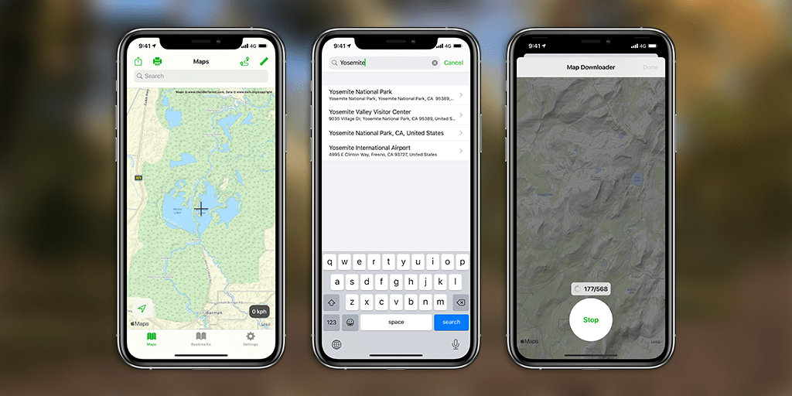

Maastokartat
Maastokartat on ulkoilukarttasovellus iOS:lle, iPadOS:lle, watchOS:lle ja macOS:lle. Sovellus sisältää kartat Suomeen ja maailmalle.
Sovelluksessa on useita hyödyllisiä ominaisuuksia, kuten karttojen offline-lataus, kirjanmerkit, pilvisynkronointi, sijainnin jako ja paljon muuta.